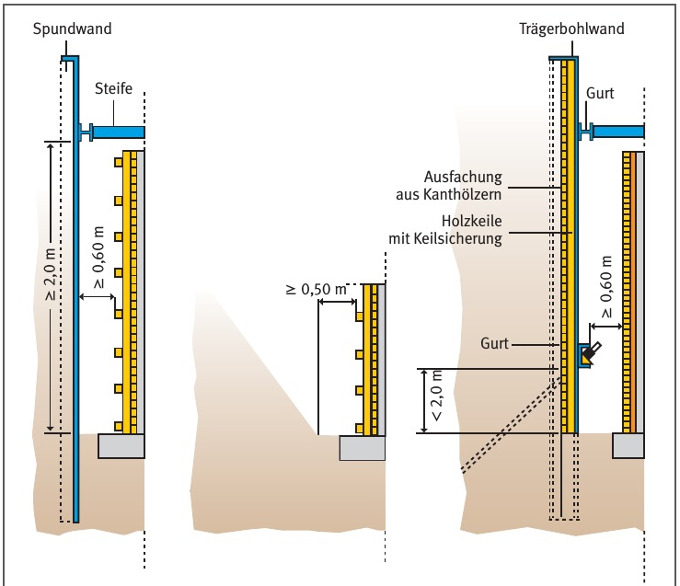
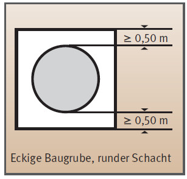
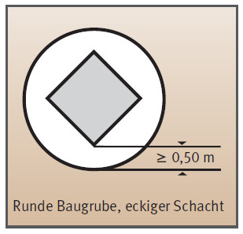

Arbeitsraumbreiten in Leitungsgräben und Baugruben |
| Gräben für Abwasserleitungen und -kanäle (DIN EN 1610) | |||
| DN = Nenndurchmesser in mm | Mindestgrabenbreite (OD + x) in m | ||
| verbauter Graben | unverbauter Graben | ||
| ß ≤ 60° | ß > 60° | ||
| ≤ 225 | OD + 0,40 | OD + 0,40 | |
| >225 bis ≤ 350 | OD + 0,50 | OD + 0,40 | OD + 0,50 |
| >350 bis ≤ 700 | OD + 0,70 | OD + 0,40 | OD + 0,70 |
| >700 bis≤1200 | OD + 0,85 | OD + 0,40 | OD + 0,85 |
| >1200 | OD + 1,00 | OD + 0,40 | OD + 1,00 |
| Gräben für alle übrigen Leitungen(DIN 4124) | ||||
| Äußerer Leitungs- bzw. Rohrschaftdurchmesser OD in m | Lichte Mindestbreite b in m | |||
| verbauter Graben | geböschter Graben | |||
| Regelfall | Umsteifung | ß ≤ 60° | ß > 60° | |
| bis 0,40 | b = OD + 0,40 | b = OD + 0,70 | b = OD + 0,40 | |
| über 0,40 bis 0,80 | b = OD + 0,70 | b = OD + 0,40 | b = OD + 0,70 | |
| über 0,80 bis 1,40 | b = OD + 0,85 | |||
| über 1,40 | b = OD + 1,00 | |||
OD = Außendurchmesser in m
| Gräben für Abwasserleitungen und -kanäle (DIN EN 1610) | |
| Grabentiefe t in m | Mindestgrabenbreite b in m |
| t < 1,00 | keine Mindestgrabenbreite vorgegeben |
| 1,00 ≤ t ≤ 1,75 | b ≥ 0,80 |
| 1,75 < t ≤ 4,00 | b ≥ 0,90 |
| t > 4,00 | b ≥ 1,00 |
| Gräben für alle übrigen Leitungen (DIN 4124) | |
| Grabentiefe t in m | Lichte Mindestgraben breite b in m |
| t ≤ 1,75 | b ≥ 0,60 unverbaut mit Teilböschung |
| b ≥ 0,70 vollflächig verbaut; teilweise verbaut | |
| 1,75 < t ≤ 4,00 | b ≥ 0,80 |
| t > 4,00 | b ≥ 1,00 |
| Regelverlegetiefe t | bis 0,70 m | über 0,70 m bis 0,90 m |
über 0,90 m bis 1,00 m |
über 1,00 m bis 1,25 m |
| Lichte Mindestbreite b | 0,30 m | 0,40 m | 0,50 m | 0,60 m |

Sonderfälle


07/2015